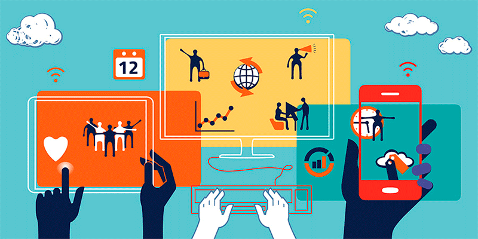
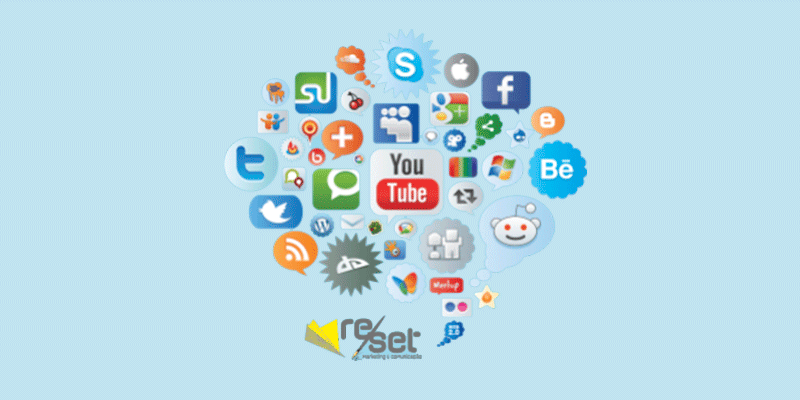
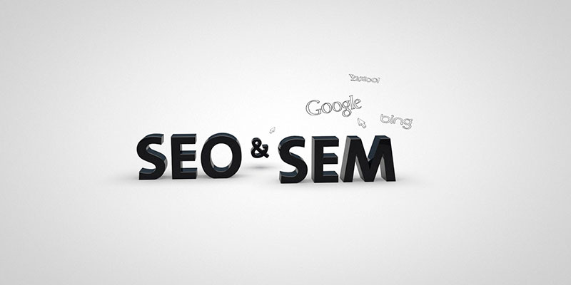
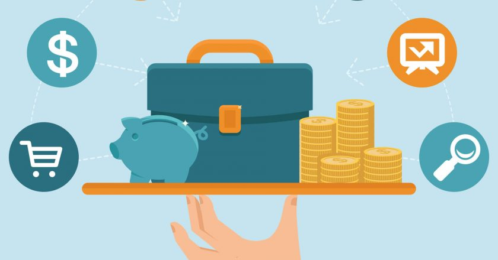

HOTMART UMA OPORTUNIDADE QUE PODE TE TIRAR DA CRISE FINANCEIRA PESSOAL.
A Hotmart é uma plataforma de distribuição de conteúdo digital. Que ajuda a empresas e pessoas comuns, que são produtores de conteúdo digital a vender seus conteúdos de formas simples e segura.
E ainda pode aumentar os lucros ampliando os canais de vendas, disponíveis dentro da plataforma de uma forma bastante estratégica.
Como já falei a Hotmart como plataforma de distribuição e comercialização de produtos digitais, onde quem participa tem duas formas de iniciar: Sendo Produtor de conteúdo digital, e a segunda forma, é como Afiliado, nos dois casos a plataforma servirá como intermediadora tendo o objetivo de facilitar ao máximo a introdução de seu negócio dentro do mercado digital, tanto o Produtor como Afiliado.
Ao decorrer desse artigo você encontrará algumas vantagens para poder começar seu negócio como um empreendedor digital, e poder obter muitos lucros trabalho diretamente de sua casa, e no conforto que trabalho Home Office lhe oferece.
A Hotmart surgiu para descomplicar o seu negócio digital!
Hoje as empresas usam o marketing digital para se comunicar com seu público alvo, de maneira mais direta e objetiva.
Essa modalidade de marketing, eram apenas adotadas por grandes empresas, hoje o mercado digital mudou totalmente, e empresas de qualquer porte ou pessoa pode usar, vamos listar algumas:
- Ecommece;
- Empresas Físicas;
- Empreendedores que vende produtos online individualmente;
- Até mesmo os blogueiros utilizam para promover e aumentar sua audiência em seu blog.
Por seu custo relativamente baixo o Marketing Digital traz diversas oportunidades tanto para grandes empresas, como para o pequeno empreendedor que está ingressando no mercado do empreendedorismo digital.
Não tem como ficar sem acreditar no marketing digital, já que a maior parte do público utiliza a internet todos os diais.
Já são mais de 54,9% de lares brasileiros que estão com acesso à internet segundo o IBGE, isso é mais de 95,4 milhões de brasileiros conectados, e esse número só tende a aumentar.
Conforme a Pesquisa de Mídia Brasileira, a média de brasileiro acessando internet já ultrapassa as 4h59 e esses números continuará a crescer.
E porque não falar sobre o impacto digital no comercio brasileiro desses últimos anos, segundo o Varejo no Brasil, um estudo detalhado feito pelo Center for Customer Insight, do The Boston Consulting Group, mostra que a internet tem mais força nos país do que as estatísticas sugerem, por isso não deve ser ignorada pelos grandes, médios e pequenos varejistas e até mesmo empreendedores digitais.
“A internet influencia mais da metade de todas as compras do varejo brasileiro. Quase todas as pessoas conectadas — cerca de 106 milhões (mais da metade da população brasileira) — usam a internet em algum momento para fazer compras. O impacto digital no comércio já é considerável e deve se tornar ainda maior nos próximos anos. ”
Sem dúvida o meio marketing digital, é a melhor modalidade atualmente para seu negócio.
Recebas as Novidades
Coloque o seu email abaixo para receber gratuitamente as atualizações do blog!
Gostou de conteúdo que leu até agora? Então continue aprendendo mais sobre esse assunto, onde falarei mais sobre:
- Quando surgiu o Marketing Digital?
- O que é o Marketing Digital afinal?
- As vantagens do Marketing Digital?
- Quais canais são mais favoráveis ao marketing digital?
- Marketing de conteúdo e Marketing Digital, existe diferencia?
- SEM/SEO e marketing digital qual a relação?
- Quais oportunidades com Marketing Digital no mercado?
- Conclusão
Quando surgiu o marketing digital?
Em meados dos anos 90, Tim Berners-Lee com sua brilhante criação, trouxe ao mundo moderno a internet bem diferente da que nós conhecemos hoje, a web 1.0.
A web na época não tinha tanta interação com seus usuários, mas eles encontravam informações através de um sistema de busca simples.
A parte desse início, começa a surgir o marketing digital, mais nesse período ele ainda era bem parecido com o marketing tradicional.
A intenção das empresas até aquele momento era divulgar sua marca, produto ou serviços nos sistemas de buscas que a internet oferecia.
As empresas optavam mais em se comunicar diretamente com o consumidor, lembrando que ainda não existia o cuidado com os interesses dos clientes bem definido como hoje.
Em 1994 para ser mais preciso surgi o primeiro Banner clicáveis, e já conquistava as atenções dos diversos usuários, ali pode se dizer que começava a ideia de implementar o tradicional marketing no mercado online, criando mais a frente o e-commerce (comércio online).
O e-commerce, surgiu a partir da evolução da web com sua versão 2.0, e suas novas tecnologias, Java e flash por exemplo.
Essas tecnologias aumentaria as interações das páginas das redes mundial dos computadores. Onde o marketing digital pode aproveitar e aprimorar ainda mais seu mercado.
O Marketing Digital se tornou bem mais frequente no mundo, devido a ideia de que: Quanto mais pessoa, mais consumidores.
Contudo os possíveis clientes não compram os produtos ou serviços na internet, com o modo clássico da persuasão usado no tradicional marketing, mais é influenciado a comprar com bases em informações objetivas.
Essas informações podem ser uma boa especificações dos produtos, ou até mesmo opiniões de outras pessoas.
O marketing digital evoluiu muito ao passar dos anos, desde então tem tomado muitos rumos em seu desenvolvimento, o mesmo é conhecido como marketing online, ou internet marketing, e ainda tem outros nomes.
Caminhando cada vez mais para o caminho da boa personalização, ou seja, entregar a mensagem certa, para as pessoas certa, na hora certa.
O que é o Marketing Digital afinal?
Marketing Digital é uma forma de desenvolver conjuntos de atividades, através de mídias digitais para empresas ou pessoas, com a intenção de criar novos negócios, relacionamento e desenvolver identidade de sua marca, produtos/serviços.
Por isso que grandes empresas começaram a migrar para essa nova forma de empreender, com suas diversas vantagem sobre o tradicional marketing, que permite um maior ROI (Retorno Sobre Investimento).
Falaremos sobre cada vantagem nos seguintes tópicos.
O Marketing Digital se tornou mais que essencial para grandes e pequenas empresas de todos os mercados, ou até mesmo para o empreendedor individua, por ter suas métricas bem mais claras.
As vantagens do Marketing Digital?
A grande vantagem no mercado digital hoje em dia, é a facilidade que encontramos em ferramentas dentro do universo online.
tanto em ferramentas pagas como gratuitas, são elas que nos dará os resultados necessário para cada negócio conquistado, e com isso estaremos falando de algumas vantagens que temos dentro do marketing digital.
Métricas que são muitas, essas talvez será uma das mais importante dentro das vantagens, pense em um outdoor, em uma avenida movimentada, ou em uma esquina, será se teremos como saber qual foi o alcance que ele gerou em quantas pessoas alcançou?
Acredite isso é impossível.
Agora na internet a coisa é bem mais interessante, as métricas são diferentes você pode ampliar seu alcance de acordo com sua capacidade e conhecimento.
E assim você sabe exatamente quantas pessoas alcançaram seu site, de onde elas vieram qual a chance de ainda visitarem seu site, ou não.
Quantas páginas visitarão, as que são mais ou menos relevantes, quantas páginas clicaram ou quais delas viraram clientes, essas são várias de muitas outras métricas que podemos ter.
Agilidade por exemplo, é algo supriendente, essa vantagem diferencia em muito com marketing tradicional.
Um exemplo, ela nos permite mudar em tempo real a estratégia de uma campanha, para ver se ela está indo bem ou não e como poder aplicar a melhor performance dentro dessa mesma campanha.
Podendo fazer até mesmo teste A/B para ver qual anúncio se adequa melhor ao público alvo.
Já no mundo off-line isso é impossível, no caso de um erro de uma impressão com vários folhetos por exemplo, se perde o trabalho todo, sem falar na demora em refazer tudo isso de novo, leva um bom tempo e dinheiro também, :) rsrsr.
Alcance nem precisamos entrar em muitos detalhes, já que estamos falando da rede mundial, através de seu escritório, ou de onde você estiver poderá alcançar o mundo inteiro com seus conteúdos.
Segmentação, alcançar o mundo inteiro não é o suficiente, você precisa especificar seu público alvo, é você que determina quais grupos de pessoas quer encontrar dentro de seu nicho de atuação.
As segmentações traz essas possibilidades.
Por exemplo; quero alcançar um grupo de pessoas que quer perder peso, com idade mínima de 25 há 45 anos, sendo do gênero Masculino.
Isso é possível graças o poder das segmentações, nos blog e redes sociais, e quanto mais segmentado mais será as conversações, coisa que seria quase impossível nas mídias tradicionais.
Ser interativo, são indispensáveis dentro do marketing digital, você precisa interagir com as pessoas e deixar que elas façam o mesmo com você.
Ouvir as opiniões de seus usuários e responder a eles, é algo primordial para seu negócio.
Seja nas redes sociais ou no seu blog, o feedback do seu púbico são interessantíssimos para poder melhorar sua performance.
E quando as pessoas voltam para suas páginas, estão também dando um feedback passivamente, isso também é bastante relevante para seu blog.
Recebas as Novidades
Coloque o seu email abaixo para receber gratuitamente as atualizações do blog!
Quais canais são mais favoráveis ao marketing digital?
Seu Blog, essa uma das mais importantes ferramentas para seu negócio dentro do mercado digital, seu blog, é sua presença na internet, é sua marca.
Por isso ele precisa ser bem feito, bem segmentado pelo Google.
Imagine um blog mal feito, mal projetado nem mesmo você queria visita-lo né mesmo?
Por isso é preciso caprichar o máximo possível, pois é lá que você vai criar sua audiência, é nele que colocará seu conteúdo para atrair as pessoas para você.
E o legal do blog é que ele é seu, é seu domínio e ele suporta diversos formatos de conteúdo, com e-books em pdf por exemplo, vídeos e várias outras opções.
E-mail, pode-se dizer que é a alma do negócio, para quem quer ter resultado produtivos direto com os clientes.
Esses e-mails são valiosíssimos pois as pessoas te deram autoridade para falar com elas, e isso é algo muito importante dentro de seu negócio, que pode ser usado para diversas coisa.
Pode ser usados em muitos nichos diferentes, e lembre-se disso, o valor do e-mail nunca diminuiu ao contrário, está cada vez mais válido criar lista de e-mail para sucesso em um negócio.
Rede sociais são tendência hoje, nesse mercado inovador e cada dia surgi novas redes sociais, sendo que é preciso conhecer as peculiaridades de cada uma delas, e aí escolher qual seu uso necessário de acordo com suas necessidades, e para cada tipo de conteúdo.
Vale lembrar que em todas redes sociais, tem o alcance orgânico, que é a forma de conteúdo que as pessoas gostam, interagem e compartilha aquele assunto entre si, sem você pagar nada.
E por último os anúncios pagos que serve para impulsionar ainda mais seus conteúdos em formas de anúncios, e dessa forma alcança mais pessoas, de formas que elas interagem em um alcance ainda bem maior.
E porque não falar do nosso grande aliado Yotube, a grande maioria dos empreendedores já afirmam que, mais de 70% dos seus resultados, já estão vindo dos vídeos estratégicos postado no yotube.
Sem dúvida alguma, esse canal é um dos pilares mais importante na trajetória de um empreendedor digital, pela sua facilidade em alcançar as pessoas quando o conteúdo apresentando é bastante relevante para o público alvo.
Sem falar que seu poder de alcance é ilimitado sem sobra de dúvida.
Marketing de conteúdo e Marketing Digital, existe diferencia?
Sempre costumo dizer que ambos se completam, pois não existe marketing de conteúdo sem primeiro um marketing bem aplicado.
O marketing digital como sabemos é uma série de técnicas que visa apresentar uma marca ou uma empresa na internet, e coloca-las presentes nos grandes motores de buscas, para que seu público alvo, o encontrem com facilidade por meio de palavras chaves pesquisadas.
A forma rápida que as informações chagam aos consumidores através dos canais de distribuição eletrônica são uma forma a mais de promover os produtos ou serviços com maior eficiência.
Já por sua vez o marketing de conteúdo e responsável por gerar conversões, em um completo processo para um marketing de sucesso.
Diferentemente de estratégias que pagam, para que conteúdo apareçam para pessoas, sabendo que esse método cada dia pode ficar mais caro e menos eficiente.
O marketing de conteúdo age de uma forma simples, foca em criações de conteúdos relevantes, para que as pessoas não só curtam, mais que elas além de comprar comecem a se engajar com mais públicos.
E assim gerar não somente compradores e sim seguidores fiéis que sem dúvida sempre vai indicar seu conteúdo sem pestanejar.
O Marketing de conteúdo, envolve a criação e compartilhamento de conteúdo para informar e conquistar clientes.
São diversas formas de conteúdos como, notícias, vídeos, ebooks, post de blog, artigos, imagens, postagem em redes sociais, e outros. Esse foco é atrair e conquistar o público certo.
A ideia geral é, que ao invés de você ir atrás das pessoas, as pessoas que possa começar a procurar seus produtos e serviços.
E quando elas são atraídas pelo seu conteúdo a chance delas se engajarem e compartilhar com outras pessoas é bem maior.
SEM/SEO e marketing digital qual a relação?
Não adianta eu falar de marketing digital o tempo todo e não falar de SEM/SEO, esses dois são essenciais para o crescimento do seu negócio.
Seria impossível se manter sem eles, pois são eles que leva as pessoas certas para seu negócio.
SEM: Search Engine Marketing, que quer dizer (
SEO: Search Engine Optimization, que quer dizer ("Otimização para Mecanismos de Busca"), este termo está relacionado a práticas de otimizações de um site, para que ele apareça melhor nos rankeamentos dos mecanismos de busca, por meio de resultados de pesquisas orgânicas ou seja, são os resultados que aparecem naturalmente e que não são pagos.
O SEO é muito importante em seu negócio, pois ele afeta diretamente seu site, blog, e no seu canal de yotube.
Também existe até seo para Instagram, por isso é preciso conhecer bem a regra de SEO para dominá-lo, claro que na grande maioria das vezes a otimização é para o Google.
mais hoje no momento que o marketing de conteúdo e o marketing de atração crescer, esses métodos são essenciais.
Sempre, mais sempre mesmo, o marketing digital é feito só sobre resultado, sem resultado não existe o marketing.
Por isso que é precisar ser focado em métricas dentro desse mercado, pois se não está dando resultados é preciso mudar de estratégia, pois alguma coisa está errada dentro de um planejamento.
Você pode ter variais métricas com o SEO, e isso é extremamente necessário para acompanhamento de resultado.
Métricas de crescimento ou audiência, ou seja, quantas pessoas visitaram o site/blog hoje, isso está relacionado ao crescimento de sua audiência mesmo.
O engajamento é quando, é preciso saber quantas pessoas estão interagindo.
Um conteúdo com bastante engajamento, vele mais que um site com muitos conteúdos, e tendo poucas interações.
Já as métricas financeiras, traz a preocupação de quanto está custando para trazer o cliente através do meu marketing.
Métricas sobre o ROI, que é o retorno sobre o investimento, para cada um real que investir em marketing, quanto é o retorno em porcentual.
Recebas as Novidades
Coloque o seu email abaixo para receber gratuitamente as atualizações do blog!
Quais oportunidades o Marketing Digital me oferece no mercado?
As oportunidades dentro do mercado do marketing digital são inúmeras, onde você poder escolher a que mais você se identifica, para melhor dominar o assunto.
Empreender nesse mercado, é uma das melhores opções que temos nesse momento de crise no país.
As propostas que o marketing digital oferece, vai de um simples vendedor a um grande empreendedor, não importa tudo depende do tamanho de seu esforço e de quanto você acredita em si mesmo.
O empreendedorismo é uma das áreas que mais está crescendo na internet, e o melhor disso é que as pessoas estão aprendendo, como empreender e ter resultados até acima do esperado.
São inúmeras opções dentro desses segmentos, onde você pode fazer suas escolhas e começar a trabalhar no que mais gosta.
A oportunidade começa com seu hobby, aquilo que você faz muito bem a ponto de transmitir o que sabe para as pessoas, essa está entre as opções que se mais coloca em práticas no mercado online.
Pode pegar tudo isso e vender na internet em forma de book, vídeos aulas ou conferência online, isso é o conhecido como infoprodutos.
Para produzir esses produtos é muito simples, basta você usar seu computar, usando o Word (editor de texto) e vender todos os dias, até mesmo dormindo porque a internet não para, o marketing digital tem esse poder.
A internet não para, as pessoas usam internet todos os dias, toda hora.
Nesse exato momento tem gente procurando por informações no google, ou até mesmo no youtube, informações essas que só você sabe, e essas pessoas pagariam caro para poder ter acesso a seus conhecimentos.
Já imaginou se pudesse vender o que só você sabe para essas pessoas?
E melhor se vendesse para centenas milhares de pessoas? Imagine como seria sua vida a partir daí.
Projeto como esse que depois de pronto, acontece as vendas de formas automática e escalável.
Depois que for criado seu infoprodutos, você pode sair vendendo até mesmo para outros países, porque na internet não existe fronteiras nem limite para negócios como esses.
E o melhor que você não precisa ser expert no assunto, qualquer pessoa com qualquer tipo de conhecimento, em um determinado assunto de qualquer área ou nível de conhecimento, pode fazer isso.
Dentro da internet existe muitas ferramentas que pode te ajudar desenvolver seu produto online uma das ferramentas que pode te ajudar nas organizações e vendas de um produto é a Hotmart.
Claro que antes de produzir qualquer produto, você precisa buscar as demandas de procura por assunto no qual você domina, para que você adapte melhor seu conhecimento naquilo que as pessoas estão procurando.
Uma as ferramentas que se usa para essas pesquisas seria a que o Google oferece, o Google AdWords, nelas você tem o controle de quantas pessoas estão procurando por determinado assunto e qual assunto elas mais gosta.
As oportunidades que o marketing online oferece está posta aí, e só depende de você, daquilo que você sabe, e com seu conhecimento ou hobby você pode ajudar a muita gente fazendo o que mais gosta.
Conclusão
Como vimos o marketing digital envolve muitas estratégias avançadas, que leva a qualquer negócio na internet de forma estratégica a te resultados interessantes.
Para se tornar um profissional nessa área é preciso um bom estúdio, dedicação e acompanhar grandes blogs, como o viver de blog, e nosso blog, Só Renda Online.
Ainda existe bastante espaço dentro mercado do marketing digital, sem falar que as empresas estão cada vez mais deixando de lado o marketing off-line e partindo para o marketing online, onde os resultados são mais interessantes.
E para quem tem empresas e não está investindo em marketing digital, é hora de considerar seriamente, pois os resultados pode superar suas expectativas.
Espero ter ajudado em alguma coisa nesse pequeno e humilde artigo, onde nós abordamos sobre a importância do mercado online, espero que de alguma forma eu possa ter ajudado a você poder entender esse novo caminho e tomar a direção certa.